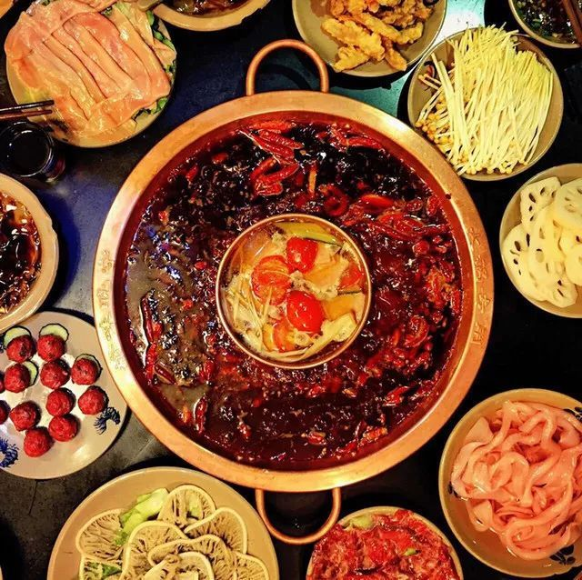
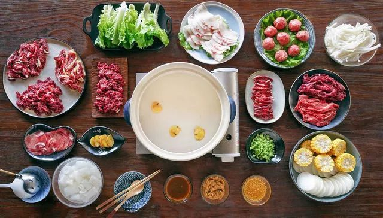
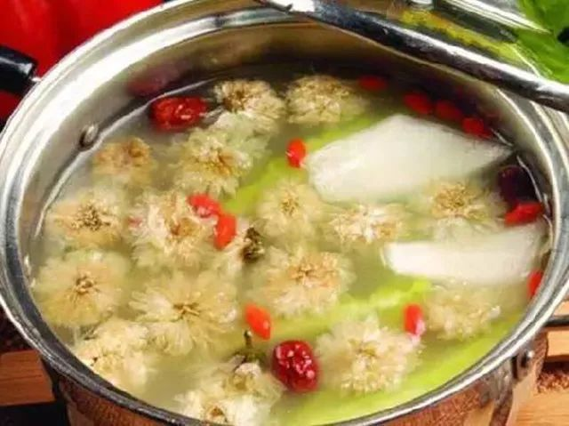

火锅详情
特色火锅篇
重庆老火锅
大家有看《舌尖上的中国2》的重庆火锅吗？ 看了真的让人口水流一地。 正宗的重庆老火锅必须是汤红油亮， 呛辣醇厚，汁浓味厚，鲜香回甜， 在制作的各个地方都突显它的精致与天然。
制作方法：
- 1.制作高汤：猪棒骨焯水去血水， 重新冷水加至淹没煮沸去浮沫， 将葱、姜、料酒、十三香放入锅内， 调至小火熬制约3-4小时。
- 2. 制作锅底：锅中加入约1000g水+重庆老火锅底料包煮沸。
- 3. 备味碟：一般准备香油、蒜泥、川崎、酱油、醋等视各自味调用。
- 4. 涮菜：把高汤加入火锅底就可以涮菜了， 毛肚、鸭肠、牛血旺、鳝鱼、腰片、 梅林午餐肉、鲜排骨、滑肉片、香肠……
潮汕牛肉火锅
时下的火锅新宠，近一两年来简直火遍全中国。 它为注重突出食材本身的鲜味， 因此汤底、蘸料都必须清淡， 讲究将食物原本的美味呈现到极致。 将牛肉放在漏勺里三浸三晾，过秒即捞， 蘸上少许沙茶酱，唇齿间瞬间油香四溢。
制作方法：
- 1. 清水中加入几片老姜，放入生牛肉丸 、胸口捞、适量盐，煮沸做成锅底。 锅底也可以用牛骨汤底代替，具体的做 法如下：牛骨放入冷水中煮沸去浮沫 ，调成小火并加姜、葱、花椒、醋等炖 3-4小时，也可加白萝卜、玉米等提鲜。
- 2.锅底沸腾后转小火，涮肉的顺序由瘦到肥。 可以减少浮沫和杂味，保持锅底清澈。
- 3.蘸料用沙茶酱即可，也可按口味加入炸蒜末、芹菜粒、黄豆酱等。
- 4.涮牛肉：牛舌、吊龙、肥胼涮10秒；五花腱涮13秒。
菊花暖锅
冬天里最有诗意的火锅，没有之一。 火锅汤汁为鸡汤或肉汤， 并辅以肉、鱼、鸡等薄生片与菊花一起涮着吃， 清香爽神，风味独特，可是被视为火锅家庭中之上品。
制作方法：
冬天里最有诗意的火锅， 没有之一。火锅汤汁为鸡汤或肉汤， 并辅以肉、鱼、鸡等薄生片与菊花一起涮着吃 ，清香爽神，风味独特，可是被视为火锅家庭中之上品。
调制酱料：
芝麻酱2勺加清水调开，再加甜面酱1勺、花椒油1勺、韭菜花半勺、腐乳半块、辣椒油适量调匀即可。